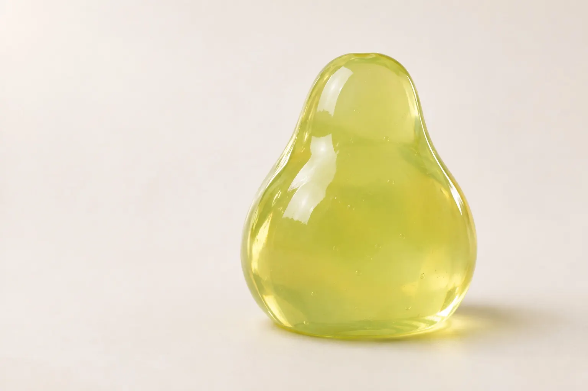

A little give.A little spring.Nothing to get right.

Soft Orchard is an original, fictional material playground. Every interactive fruit is synthetic, made from code. The studio plates and hero photograph are AI-generated. This is expressive physics, not a scientific simulation or a real product.
Guide: “Budarina Curated Prompt Collection” by Marina Budarina. Selected prompt: “Jelly Study” — Vibe-code, identified by its opening line: Build a browser-based 3D playground called Jelly Study.
Build a browser-based 3D playground called Jelly Study.
The seven-stage prompt was freely accessible through its copy button, without sign-up, on 9 November 2026. Its staged approach guided the visual foundation, elastic grabbing, fruit editing, real geometry splitting, skewer stacking, touch controls and stability pass. The original collection is not reproduced here.
Our interpretation: original name, copy and procedural fruit. Locally vendored Three.js renders the meshes; a bounded CPU spring solver replaces a GPU volumetric solver. Closed extruded polygons replace arbitrary volumetric cutting: cuts run through the fruit’s depth in Front view. Shape-restoring constraints approximate volume; they are not a volume-conserving finite-element simulation. No generated video or API key was used. The two AI-generated stills (jelly reference and empty studio sweep) were made with ChatGPT image generation. An equirectangular-style reflection texture derived locally from the studio plate lights the real-time jelly. It is an artistic lighting match, not a measured HDR environment. Motion remains the local Three.js spring simulation; no Gemini Veo was used.
Six objects maximum. Stacking attaches a narrow center region; outer vertices remain elastic. Split is disabled while stacked. Reduced-motion and no-WebGL modes show the photoreal hero still. Resume is an explicit opt-in to WebGL motion for reduced-motion visitors. Mouse, touch and keyboard controls are supported; direct sculpting needs a pointer.
Drag a fruit to stretch it; tap to recolor, duplicate or remove it. Drag empty space to orbit; wheel or pinch to zoom. Split switches to Front view: draw a line completely across one fruit. Stack threads your pieces onto a skewer. Reset returns to one pear.
Rendering library: Three.js (MIT). Typeface: Outfit (SIL Open Font License). AI-generated imagery is illustrative, not a photograph of a real product. Source prompt styling takes precedence over general design heuristics.